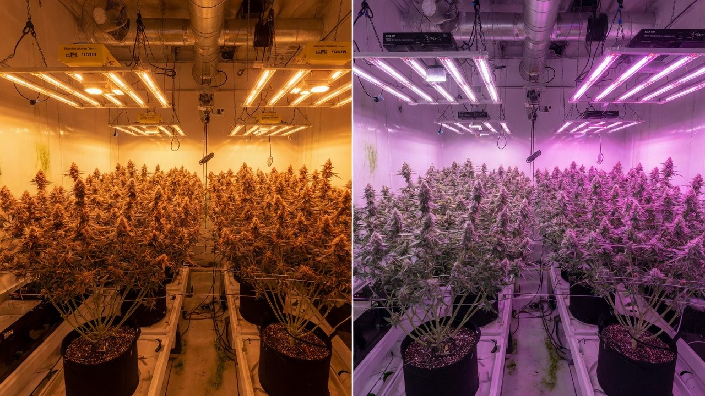
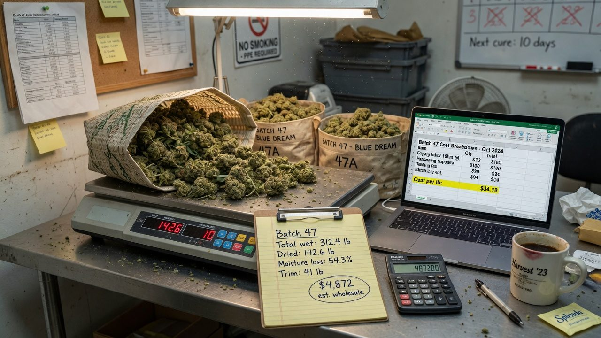
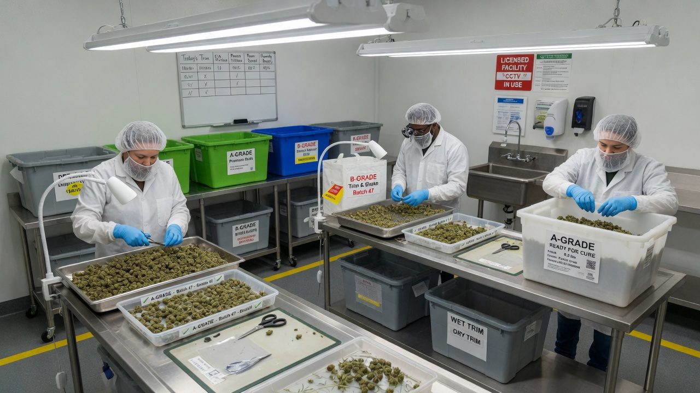
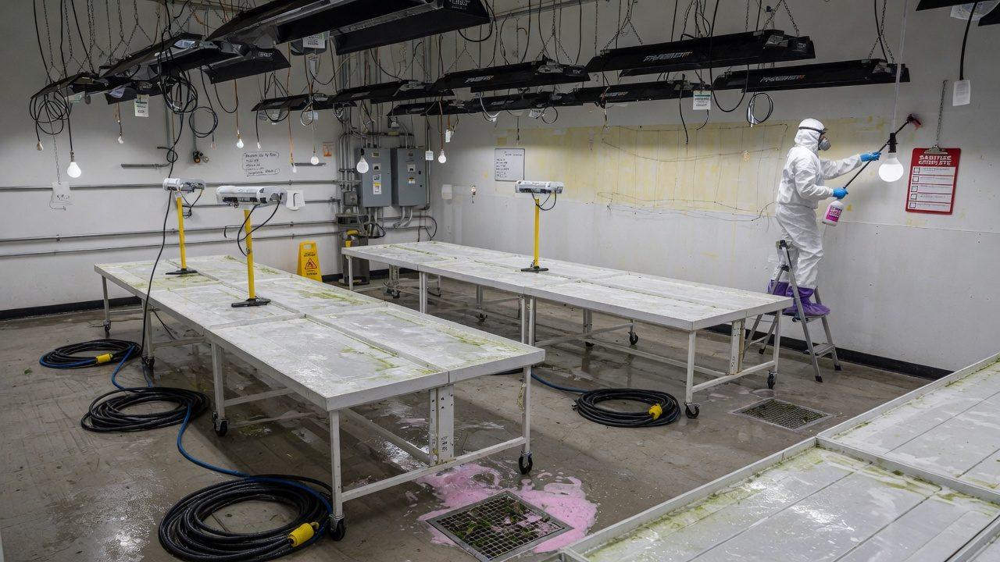

Yield for each watt and the cost of a gram
This paper shows three yield denominators: g/m² of canopy, g/W of light, and g/kWh all-in. It shows the function of each denominator and the information that it does not show. The paper calculates the cost for each gram of an example room of 100 m² (1,076 ft²), and you can examine each step. The paper gives a reference for each number, or shows how to calculate it.
Purpose and scope
This paper shows the arithmetic of the economics of cultivation. It shows how to calculate the cost for each gram from given values. It also shows the benchmarks from the literature and their limits. This paper is not investment advice, business advice, or tax advice. The example room in this paper is a model. No facility has this room.
Calculate each table again with the numbers of your room. The prices, the wages, the price of electricity, and the regulation are very different in each market. Before you make a decision for your business, speak to an accountant.
Most persons speak about plants when they speak about grow rooms. But the result of one division shows if the room can continue to operate. The division is: all the dollars that you pay in one year, divided by all the grams that you sell in that year. If the result is less than the price that you get for one gram, you have a business. If it is not, you have a license but no business. Your room has a loss, and no information about terpenes changes the result.
The problem is that the usual metrics, g/m² and g/W, are for other tasks. They are metrics for agronomy, and growers use them to compare results with other growers. Each one ignores a part of the cost. This paper shows the three usual denominators and the function of each denominator. It also shows the benchmarks from the literature with their limits, because the limits are large.
Then the paper calculates the full list of costs for an example room of 100 m² (1,076 ft²) and shows each step of the arithmetic. After this, the paper shows labor (almost all growers think that this cost is smaller than it is), cycles each year (a number that multiplies the production and that is not easy to see), grades of quality, a tornado chart of the sensitivity, and the break-even.
If you can divide two numbers, you can do all the steps in this paper. Unit economics is the selection of the correct two numbers to divide.
Definitions
Nine terms are necessary for the remaining sections. When two growers calculate the economics of a room and get different results, they frequently use the same term for different fractions.
Evidence and limitations
We want each paper to be correct. Thus we examine each paper for information that is not solid. This information comes from the view of one grower, from a small number of sources, or from grower methods that have no controlled test. We identify this information, and we do not show it as solid.
Frequently there is no paper for the decision that you must make. Then we use the reports of other growers and the methods that work in the rooms that we know. This information can help you, but it is not the result of a laboratory test. Use the methods that work for your plants, for your room and for your meters. If a table does not agree with your crop, use the data from your crop and record the difference.
- The primary definitions and the units of measurement in the paper
- Safety limits that have a citation to a regulation or a specification
- Target ranges for light, climate and feed in each stage. They are start values that you can change.
- SOPs that work in many rooms, but you must adjust them for your genetics and meters
- A number for yield or potency that you will always get, with no test at many sites
- Controller setpoints from a different facility, with no new calibration
If you find an error, make a report. We will correct it. Make the report on GitHub, with the name of the paper and the information that is incorrect. If you have a source, include it: Make a report of an accuracy problem. The regulations, labels and licenses of your area always override each procedure in these papers. The label weak in a paper shows the points where the risk of an error is highest.
Summary of the cost for each gram
- The cost for each gram = all the dollars for the year ÷ all the grams that you sell in that year. Do not use the cost for each cycle or the cost for each room. Do not use a cost that you get only when the room operates correctly. The bank statement gives the dollars. The scale gives the grams.
- This one fraction has three quantities that you can change: grams for each cycle (agronomy), cycles each year (operation of the facility), and dollars each year (all the costs of the year). Each change that makes the business better is a change to one of these three quantities.
- g/m², g/W, and g/kWh are metrics for one part of the business. They help you to find problems. If you use them as the primary metric of the business, they cause errors, because each one ignores a cost that the other metrics include.
- The range of the benchmarks from the literature is approximately 6 times in g/W and much larger in g/m², because the conditions are different. Give a range with its conditions, or do not give it.
- Labor and turn time change the result more than the equipment that a supplier sells to you. Calculate the sensitivity before you pay for equipment.
g/m², g/W, and g/kWh: how to select the correct metric
The three metrics divide the same harvest by three different quantities, and each metric gives you different information. The error is not that you use the metrics. The error is that you use one metric as the primary metric of the business and ignore the information that the metric does not show.
g/m² of canopy is the number for agronomy. It compares crops, cultivars, and steering decisions for the same floor area, and most investigations give this number. It does not include time. Cycles of nine weeks and of twelve weeks can give the same g/m², but the shorter cycle gives 30% more each year. It also does not include power, labor, or the quantities of the grades.
g/W of installed light is a metric from the time when growers used it to compare lamps. Section 06 examines this metric in full. It shows the quantity of crop for each unit of lighting equipment. But the denominator is the nameplate watts. The metric ignores the hours in which the lamps operate and all the energy that the HVAC uses. Most important, it ignores the fixture generation that gives the watts.
g/kWh all-in (or its reciprocal, kWh for each kg) divides by all the kilowatt-hours that go through the meter: lights, HVAC, dehumidification, pumps, and all other loads. It is the one denominator that agrees with the electricity bill that you get from the supplier. It is also the primary metric for benchmarks of facilities. The PowerScore of the Resource Innovation Institute examines a facility with only two numbers. The numbers are kWh for each unit of flowering canopy and grams for each kWh. The PowerScore includes more than 350 growers[1].
The difference is very large: indoor production uses approximately 18 times the energy for each gram that outdoor production uses[2]. Thus this metric is very important for an indoor room. It is less important for a greenhouse.
| Metric | Good for | Does not include | Summary |
|---|---|---|---|
| g/m² for each cycle | To compare crops, cultivars, and steering for the same floor area | Time, power, labor, grade | A tool for agronomy. It is not a metric for the business. |
| g/W installed | To select the size of fixtures, and to compare results with other growers | Hours of operation, HVAC, fixture generation, time | Less correct each year. Refer to Section 06. |
| g/kWh all-in | The grams for each unit of energy. It agrees with the electricity bill. | Labor, rent, CAPEX, testing | The best metric for one quantity. It is not the total cost. |
| $ for each gram | To make the decision about the business | None, if you include all the costs | The primary metric of the business |
Each time that a person gives a value for each m², make sure that you know the area that the value is for. Do the same when you give the value. The area can be the canopy, the floor of the room, or all the building. A value of 450 g/m² for the canopy becomes approximately 180 g/m² for the building. The area of the building includes the aisles, the vegetative room, and the drying room, and the usual ratio of canopy to floor is 40%. The two values are correct, but only the value for the building agrees with the area for which you pay rent.
Yield benchmarks from the literature and their limits
The values for the yield of cannabis in the literature have different conditions and different denominators. Some values are projections and not measurements. Before you compare your room with a benchmark, examine the sources and the size of the differences.
The baseline from police data. The best large-sample value for g/m² in the literature is also the first value in time. Police in the Netherlands weighed the plants from illegal grow rooms that they found. The model for the median room has 15 plants/m² at 510 W/m² of HPS, and it gives 33.7 g for each plant and 505 g/m²[3].
The division of 505 g/m² by 510 W/m² is 0.99 g/W. It is very possible that this one investigation is the source of the value ‘one gram for each watt’ that growers frequently give. The investigation is twenty years before this paper, and it gives a median value for HPS rooms.
The tests with careful conditions. In the tests of Potter and Duncombe, the HPS lamps operated at 270, 400, and 600 W/m². The tests measured 0.9–1.6 g/W, and the best result in g/W was at the lowest power[4]. More light gave more grams, but the value in g/W was lower. The tests measured how the grams for each unit of power become smaller when the power increases.
Tests with new LED fixtures show the same result from the other side. The yield of dry flower continued to increase almost in proportion to the light intensity, to a maximum of approximately 1,800 µmol·m⁻²·s⁻¹. There was no plateau[8]. A second test at 600–1,000 µmol found that each 100 µmol more gives approximately 4.6 g for each plant (approximately 51 g/m² at approximately 10 plants/m²). The yields in this range are approximately 276–447 g/m²[6]. The group of Bugbee did three tests with hemp at high light for cannabinoids and measured 500–750 g/m² in the three tests[7].
The meta-analysis, and the limits of the data. Backer and the other authors put together the data from the literature. They found efficiencies in the reports of 0.31–1.97 g/W, which is a range of 6 times. They also found projections of yield for large areas from 3.4 to 3,590 g/m², which is a range of approximately a thousand times. The cause is that the projections use numbers from small test areas for large areas that did not have a crop[5].
They also found that the yield for each watt decreased when the installed W/m² increased. They found that the yield for each m² increased when the time of flowering was longer. In the two results, the cause is the denominator and not the plant.
| Source | Conditions | Value | How to read the value |
|---|---|---|---|
| Toonen 2006[3] | Median illegal room in NL, HPS, 15 plants/m² | 505 g/m² · approximately 0.99 g/W | The source of the value ‘one gram for each watt’ |
| Potter and Duncombe 2012[4] | HPS at 270/400/600 W/m² | 0.9–1.6 g/W. The best value is at the lowest power. | The grams for each watt become smaller when the power increases |
| Rodriguez-Morrison 2021[8] | Indoor, to a maximum of approximately 1,800 µmol | The yield is almost in proportion to the light. There is no plateau. | More light gives more grams, with a cost in power |
| Llewellyn 2022[6] | LED, 600–1,000 µmol, approximately 10 plants/m² | Approximately 276–447 g/m². 51 g/m² more for each 100 µmol | A range that agrees with the data |
| Westmoreland 2021[7] | High light, three tests | 500–750 g/m² | The high end of the range, in tests with careful procedures |
| Backer 2019 meta-analysis[5] | Data from the literature put together | 0.31–1.97 g/W. Projections to 3,590 g/m². | Do not give a benchmark as one number |
| Values that growers give | No reference. Many persons give the value. | ‘300–600 g/m² for each cycle’ | A possible range with no source. Do not use it as data. |
These conditions are different in the investigations: the plant density, the cultivar, the light intensity, the pot size, and the length of flowering. Most important, the item that the investigations use for yield is different. The yield can be the weight of all the flower, the weight of grade A flower after trimming, or a projection on paper. These differences do not make the investigations incorrect. They make a benchmark with one number incorrect. When a person gives a benchmark, make sure that you know the conditions and the method of measurement.

Grams for each watt: a lighting metric from the time of HPS
The value ‘one gram for each watt’ was a good approximate value when all the rooms used the same lamp. With LED, the metric shows when you got your fixtures, because a watt in the denominator gives more photons than it gave with HPS.
The efficacy of a fixture is the quantity of photons that the fixture gives for each joule of energy. The unit is µmol of photons for each joule. Double-ended HPS, the lamp type for the value ‘one gram for each watt’, gives approximately 1.72 µmol/J.
In 2020, the best LED fixtures that growers measured gave approximately 3.0 µmol/J (blue/red) and 2.78 (white/red). The practical limits are approximately 3.4–4.1[9]. In 2014, the best LEDs gave 1.7, which is equal to HPS. In one fixture generation, the photons for each watt increased to approximately two times the previous value.
Examine the effect on g/W when there is no change in agronomy. Use the same example crop, 450 g/m² at 900 µmol·m⁻²·s⁻¹. HPS at 1.72 µmol/J supplies 900 µmol with 900 ÷ 1.72 = approximately 523 W/m². An LED at 2.8 µmol/J supplies the same photons with 900 ÷ 2.8 = approximately 321 W/m².
The photons, the plants, and the grams are the same. The HPS grower calculates 450 ÷ 523 = 0.86 g/W. The LED grower calculates 450 ÷ 321 = 1.40 g/W. The agronomy of the two growers is the same.
The change in efficacy also changes the decision about the purchase of fixtures. In the lighting tests of Bugbee, the white+red LED gave 4.6% less yield for each m² than HPS. It gave 27% more yield for each dollar of electricity[7].
If you use g/m², the LED is worse. If you use the yield for each dollar of electricity, which is a cost metric, the LED is better. The data are the same, but the denominator is different and the decision is opposite. This one test shows the primary result of this paper.
- Use it to do a check of the lighting of a room. Compare the room with rooms that have the same fixture generation. If a person tells you that an LED room has 0.6 g/W or 2.5 g/W, examine the data.
- Do not compare g/W in different fixture generations. Do not let a supplier do it for you.
- For decisions, calculate g/kWh all-in (add the hours of operation and the HVAC), and then $ for each gram. Invoices show kilowatt-hours and do not show watts.
Cost items for each gram
The cost for each gram uses a short list of items. The method is easy, but you must include all the items. Eight items are sufficient for a small indoor facility:
- Labor: the wages plus the other costs that you pay with the wages (paid leave, insurance, and tax). The item includes all personnel who touch the crop, also you, at a market rate.
- Energy: lights, HVAC, dehumidification, pumps, and controls. Include all of the energy. Use the value on the electricity bill and not the value on the fixture nameplate. Two numbers show how large this item is for indoor production. An estimate for the US shows that indoor production used 1% of all the electricity of the US approximately ten years before this paper[10]. The emissions that models give are 2,283–5,184 kg CO₂e for each kg of flower, and they change with the climate[11].
- Media + nutrients: substrate, salts, CO₂, and consumables for IPM.
- Rent: for the total floor area and not for the canopy area.
- Depreciation: the fit-out and the equipment, divided by the number of years in which you use them.
- Testing + compliance: the panels of laboratory tests for each batch, plus the licenses, the QA time, and the records. Data from California show a cost of approximately $136 for each pound (approximately $0.30/g) for the mandatory testing only. This cost includes the sampling and the failure rates[12]. This item is large and you cannot ignore it.
- Packaging + consumables: bags, totes, labels, and gloves.
- Other overhead: insurance, security, administration, repairs, and software.
The cost of one cycle does not include the days when the room has no revenue. Examples are the turn time, a failure of a batch, and the month when the dehumidifier stopped. The dollars of twelve months divided by the grams of twelve months include these days automatically. It is also the only method that your accountant and your bank accept, and it is necessary for the renewal of your license.

The example room of 100 m²: all the steps
The example in this section is a model room with given values. We selected the values because they are possible and because they divide easily. They are not the numbers of a facility in operation, and they are not a target. The primary information is the method. Use the values of your room. The same arithmetic gives your result.
- 1Calculate the installed power100 m² × 350 W/m² = 35,000 W = 35 kW installed. Do a check of the light intensity: 350 W/m² × 2.6 µmol/J = 910 µmol·m⁻²·s⁻¹. This light intensity is a usual target for LED in flowering.
- 2Grams for each cycle450 g/m² × 100 m² = 45,000 g for each cycle.
- 3Cycles each year56 days of flowering + 7 days of turn time = 63 days of cycle length. 365 ÷ 63 = 5.8 cycles each year.
- 4Grams each year45,000 g × 5.8 = 261,000 g = 261 kg each year.
- 5Lighting energy35 kW × 12 h × 56 days = 23,520 kWh for each cycle of lighting.
- 6All-in energy23,520 × 2.2 = 51,744 kWh for each cycle. With 5.8 cycles, the result is approximately 300,000 kWh each year. Do a check: 300,000 ÷ 261 kg = approximately 1,150 kWh for each kg. This value is low for indoor production. Many rooms operate at 2 to 4 times this value[2].
- 7Calculate the cost of energy300,000 kWh × $0.20 = $60,000 each year.
- 8Add the other cost itemsLabor $200,000 · rent $60,000 · testing + compliance $46,000 · depreciation $43,000 ($300,000 ÷ 7) · other overhead $40,000 · media + nutrients $26,000 · packaging $20,000. With energy: $495,000 each year.
- 9Divide$495,000 ÷ 261,000 g = $1.90 for each gram of product. The cost for each gram is the primary metric of the room. All the other parts of this paper are methods to change it.
| Item | $ each year | $ for each gram | Percentage | How to calculate the number |
|---|---|---|---|---|
| Labor | $200,000 | $0.77 | 40% | 4.0 FTE at $50k for each FTE, with all the other costs. The personnel are growers, trimmers, and supervisors. |
| Rent | $60,000 | $0.23 | 12% | 250 m² of total floor area × $240 for each m² each year. The canopy is 40% of the floor area. |
| Energy | $60,000 | $0.23 | 12% | 300,000 kWh × $0.20. All-in energy = lighting energy × 2.2. |
| Testing + compliance | $46,000 | $0.18 | 9% | 52 five-kg batches × $500 + $20k for licenses and QA[12] |
| Depreciation | $43,000 | $0.16 | 9% | $300k fit-out ÷ 7 years |
| Other overhead | $40,000 | $0.15 | 8% | Insurance, security, administration, repairs |
| Media + nutrients | $26,000 | $0.10 | 5% | Approximately $45 for each m² for each cycle: substrate, salts, CO₂, and IPM |
| Packaging | $20,000 | $0.08 | 4% | Bags, totes, labels, consumables |
| Total | $495,000 | $1.90 | 100% | The only number that the bank examines |
Use each denominator from Section 04 for the same room. The table shows the information that each denominator gives:
| Metric | Value | How to calculate it | Information |
|---|---|---|---|
| g/m² for each cycle | 450 | given value | In the middle of the ranges in Section 05 |
| g/m² each year | 2,610 | 450 × 5.8 | The number that a metric for one cycle does not show |
| g/W installed | 1.29 | 45,000 ÷ 35,000 | In the top third of the range of 0.31–1.97 from the literature[5]. The cause is the LED fixtures and not a better grower. |
| g/kWh all-in | 0.87 | 45,000 ÷ 51,744 | = 1,150 kWh for each kg |
| Cost for each gram | $1.90 | 495,000 ÷ 261,000 | The primary metric |

Labor costs
When you speak to a new grower about the cost of indoor production, the grower speaks about electricity. In the example room, the electricity bill is $0.23 for each gram. The cost of labor is $0.77 for each gram. It is the largest item, and it is three times larger than the next item. Many estimates do not include labor, or they give it a value of zero, because the grower thinks ‘I will do the work myself’.
Start with the division: $200,000 of payroll divided by 261 kg is $766 for each kg. At a cost of $25/hour with all the other costs, the result is approximately 31 hours of work for each kg of product. Most of these hours are for one task: hand trimming. The usual rate of a hand trimmer is approximately 0.45–1.4 kg (1–3 lb) of dried flower in an 8-hour shift.
The wage is $15–20/hour, or $100–200 for each shift as a piece rate[13]. Divide the hours of the shift by the rate: the result is approximately 6–18 hours for each kg for trimming only. Use 10 hours. At $25/hour with all the other costs, the cost is $250 for each kg, or $0.25 for each gram, for trimming only. The cost of trimming is more than the cost of electricity.
The sum of the tasks is approximately 18 h/kg, but the payroll gives approximately 31 h/kg. The 13 missing hours are for work that does not touch a bud. Examples are the work with mother plants and vegetative plants, meetings, cleaning, records, sick leave, and time between tasks with no work. The difference is the utilization. Thus a model that calculates the number of personnel from a list of tasks always gives a labor cost that is less than the payroll. Calculate the labor cost from the payroll, and use the task minutes to find the items that you must change.
- Measure before the purchase. A trim machine with a rate of 9–18 kg/h (20–40 lb/h)[13] is much faster than 0.9 kg for each shift (2 lb for each shift). Before you pay for the machine, examine the grade of the product that it makes. Then examine if your buyer accepts this grade (Sections 11 and 14).
- Make the peaks of work smaller. In the weeks of harvest, you must have 3 times the personnel of week 3 of flowering. If the rooms start flowering at different times (Section 10), the problem of the number of personnel becomes a problem of the times of the tasks.
- Include the cost of your hours. If the cost of your hours is $0, each room that has a loss shows a profit in the model.

Crop cycles each year
All that you make in one year is the grams for each cycle × the cycles each year. Growers monitor the first term and ignore the second term. The turn time is the number of days from the harvest of one crop to the start of flowering of the next crop. The turn time changes the cycles each year, and thus it changes all the grams that you make in one year.
The effect of the turn time is large because it multiplies the grams of each cycle. With a turn time of 7 days, the room operates 5.8 cycles each year and sells 261,000 g. If the turn time becomes 21 days, the room operates 4.7 cycles and sells 213,300 g. Causes can be a slow cleaning, clones that are not available, or a part that you get one week after the correct date.
Two more weeks in each turn time give 47,700 g less each year. At a blended price of $2.20, the revenue is more than $100,000 less, and the cost does not decrease. No feed schedule has an effect of this size.
In the meta-analysis of Backer, a longer time of flowering increased the yield for each m²[5]. You must calculate the effect of a longer flowering time correctly. One more week of flowering must give more grams than the same week gives in a new cycle. At 45,000 g for each cycle, a cycle length of 63 days gives approximately 714 g for each day. A cycle length of 70 days must give approximately 50,000 g for each cycle, which is 11% more, to give the same result. Do this division before you make the ripening longer, and not after the change.
- 1Write the cycle lengthWrite the cycle length in days on the whiteboard. If you do not measure it, it can become longer. No person knows that the turn time becomes one day longer in each cycle.
- 2Prepare before the harvestBefore the day of the harvest, complete the repair list. Put the consumables for the room in position. Make sure that the personnel for cleaning are available. Do the work of the turn time in a short time. It is not a long task.
- 3Prepare the vegetative plants firstThe most frequent cause of a long turn time is clones that are not available. The vegetative room must operate one full cycle before the dates of the flowering room.
- 4Start the rooms at different timesFour small rooms that start flowering one after the other give the same cycles each year as one large room. They make the trim labor equal in all weeks. A failure of one crop is 25% of the production and not 100%.
Grams for each cycle is agronomy. Cycles each year is about the operation of the facility. The second value is easier to make better, and it has a lower cost. A metric for one cycle does not show the second value, but the division for one year shows all of its effect. The cost for each gram can change when there is no change in the agronomy. Then do a check of the cycle length first.
Higher prices for quality and the quantity of yield
The cost for each gram is only half of the information. Your revenue changes when the price for each gram changes, and the price is different in each group. In the US spot market at the start of 2024, the average price for indoor flower was approximately $1,378/lb ($3.04/g). The prices for greenhouse flower and outdoor flower were approximately $725/lb ($1.60/g) and $418/lb ($0.92/g)[14]. The difference of the prices for the methods of production is 3 times, before you include the grades. In each method, the prices are different again for each grade: grade A flower, grade B flower, small buds, and trim.
Thus the model must use the blended price and not the price of the best grade. A decision to sell only the best grade changes all the model and not only one item. Compare two alternatives for the example room, which is almost at the break-even at a blended price of $1.90:
| Alternative A: quantity | Alternative B: grade-first | |
|---|---|---|
| Production each year | 261 kg | 248 kg (−5%: lower density, slower trimming) |
| Quantity of each grade | 60% A / 40% B | 85% A / 15% B |
| Prices of the grades | $2.40 A · $1.15 B | $2.40 A · $1.15 B |
| Blended price | 0.6×2.40 + 0.4×1.15 = $1.90 | 0.85×2.40 + 0.15×1.15 = $2.21 |
| Revenue | 261,000 × 1.90 = $495,900 | 248,000 × 2.21 = $548,700 |
| Cost | $495,000 | $505,000 (+$10k for trimming and the work with the product) |
| Profit | approximately $900 | approximately $43,700 |
Get a written contract with your buyer before you change the room. Alternative B is correct only if the buyer pays the price of grade A for the larger quantity. If you try to get the best grade, the trimming hours increase and the plant density decreases. The cycle is frequently longer.
The market can pay only the price of grade B. Then you have the cost of Alternative B and the revenue of Alternative A. In most models with a profit, the error is in the lower prices for quality and not in the yield.
Sensitivity of the cost for each gram
Before you pay for a change, use the model to find the input with the largest effect. Start with the baseline of the example room ($1.90/g). Change one input at a time in a possible range. Keep all the other inputs the same, and calculate again. Show the results in a chart with the widest range at the top. This chart is a tornado chart:
| Input changed | Range of change | Cost/g range | Difference |
|---|---|---|---|
| Yield for each cycle | 450 g/m² to 540 g/m² or to 360 g/m² | $1.58–$2.37 | $0.79 |
| Labor cost | ±25% | $1.70–$2.09 | $0.38 |
| Cycle length | 63 days to 58 days or to 70 days | $1.77–$2.08 | $0.32 |
| Electricity price | From $0.20 to 0.10 or to 0.30 for each kWh | $1.78–$2.01 | $0.23 |
| Fit-out CAPEX | ±50% | $1.81–$1.98 | $0.17 |
| Media + nutrients | ±30% | $1.87–$1.93 | $0.06 |
The sequence of the bars is the primary information. Compare a change of 20% in the yield with a change of half (less or more) in all the cost of nutrients. The yield has an effect that is four times larger. The two largest bars, yield and labor, show the performance of the grower and the quality of the procedures in the room. The bars that suppliers speak about most (price of electricity, CAPEX, bottles) are the small bars.
The sizes of the changes are also important. A change of 20% in the yield can occur because of one cycle with a pest problem or one error in steering. A change of 50% in the price of electricity occurs only if you make a new contract with the electricity supplier. The large bars are also the easy bars to change, in the two directions.
Calculate the baseline again with your numbers. Increase and decrease each item 20%. Write the differences in a list, from the largest to the smallest. You can do this work in twenty minutes in a spreadsheet. The result frequently changes the sequence of your list of CAPEX items. The trimming procedure and the turn time are before all the equipment in the sequence.
How to calculate the break-even
Break-even is the yield, the price, or the number of cycles at which the profit becomes zero. When you know the break-even, you have targets with numbers. There are three divisions for the example room:
- Break-even price at 450 g/m² and 5.8 cycles: $495,000 ÷ 261,000 g = $1.90/g blended price. If the price is less than this value, you have a loss for each gram that you sell.
- Break-even yield at a blended price of $2.20: $495,000 ÷ $2.20 = 225,000 g, then ÷ (100 m² × 5.8) = approximately 388 g/m² for each cycle. This yield is the minimum. A lower yield gives a loss.
- Break-even cycles at $2.20 and 450 g/m²: 225,000 ÷ 45,000 = 5.0 cycles. Thus the cycle length must be less than 365 ÷ 5.0 = 73 days. The cycle length has a maximum value.
| Blended price | Revenue each year (261 kg) | Profit |
|---|---|---|
| $2.60 | $678,600 | +$183,600 |
| $2.20 | $574,200 | +$79,200 |
| $1.90 | $495,900 | approximately $0 (break-even) |
| $1.60 | $417,600 | −$77,400 |
Use two methods to make the break-even a good tool. First, calculate it for each limit (a minimum price, a minimum yield, a maximum cycle length). Thus each person has a number that the person can change.
Second, calculate it again after each change. Costs increase slowly, prices decrease slowly, and a large profit of last year can become the break-even of this year without one large change. In mature markets, wholesale prices usually decrease[14]. In the model, use a price range that decreases and does not increase.
Frequent errors in unit economics
A business can continue after one of these errors, but not if the error occurs many times. All of them are errors of denominators or missing cost items. None of them is an error of agronomy.
If g/m² for each cycle increases 5% and the cycles each year decrease 10%, the room is ‘better’ but makes less. Use g/m² for each year and write the cycle length in days on the wall.
If your hours have a cost of $0, each room shows a profit. Give your hours a cost at the market rate. If the model then shows a loss, the business is possible only because you do shifts without a wage.
Automation with a cost of $80,000 makes the cost of the room $6,000 less each year. The payback is 13 years, but the equipment operates for only 7 years. Calculate the payback before you get the invoices. In the tornado chart, CAPEX is a small bar.
The model uses the price of the best grade for 100% of the production. In operation, 30–50% of the production is grade B flower and small buds, at half of the price. Use the blended price in the model. If you do not, the revenue in each period of three months is less than the model shows.
If you compare your LED g/W with the g/W of an HPS grower, you compare the efficacy of the fixtures[9] and not the agronomy. In one fixture generation, the g/W is a check of the values. In different fixture generations, the g/W gives no information.
The losses are: loss of moisture, failures of tests, remediation, and sales with less weight than the contract. The model for California gives a failure rate in tests of approximately 4%[12], and this rate is only one of the losses. Use the grams that you sell, and not the grams that you harvest, in the denominator.
Troubleshooting
Find the symptoms first and then the causes. Do the same for a plant with a disease. But the bank statement is the sensor, and the time to get a reading is three months.
| Symptom | Possible cause | First check |
|---|---|---|
| Cost/g increases slowly, and you know of no change | The turn time becomes longer, or the quantity of lower grades increases. Metrics for one cycle do not show these two changes. | Make a chart of the cycle length in days and the blended price for the last six cycles |
| Good g/m², but no profit | The denominator is good, but the cycles are slow, the labor cost is large, or the price group is less than the model | Calculate $/g again from the bank statements of twelve months, and not from the harvest record |
| The electricity bill is much more than the model | Loads other than the lights (dehumidification in winter, reheat) or a change in the hours with lights on | Put one meter on the lighting circuit and one meter on all the other circuits. Record kWh/kg and compare it with your baseline and not with the values from other growers. |
| After each harvest, you do not complete the trimming | The model uses usual rates and not measured rates | Measure the time of one shift. The usual rate of hand trimming is 0.45–1.4 kg (1–3 lb) in 8 h[13] |
| The wholesale revenue is less than the spreadsheet | Lower prices for quality, loss of moisture, batches with a failure or with less weight | Compare the $ in the invoices with the $ in the model for each batch. Record the loss of weight in % as one item. |
| Cash flow is good in summer and low in winter | The HVAC and dehumidification loads and the seasonality of prices occur at the same time | Calculate $/g for the last twelve months, and do not examine the room with one cycle only |
Values that you can change in unit economics
There is one primary number: dollars for each gram of product, for one year. This number has three quantities that you can change: grams for each cycle (agronomy), cycles each year (operation of the facility), and dollars each year (all the cost items, counted correctly, labor first). Each metric in this paper shows one of these quantities, and each change that makes the business better changes one of the three. The plants are the product. The division is the business.
Do these tasks this week, in this sequence:
- Make a list of your costs for the last twelve months. Include all eight items and the cost of your hours at the market rate.
- Divide by the grams that you sell in the same twelve months. Write the $/g result in a position where all personnel can see it.
- Write the cycle length in days on the whiteboard. Then record it for each cycle.
- Measure the time of one full trim shift and of one full harvest day. These two tasks are your largest labor items. Do these two measurements before you make a decision about a machine.
- Make the tornado chart with your numbers. Change the sequence of your CAPEX list to the sequence of the differences in the chart.
- Calculate again after each period of three months. Costs increase slowly, prices decrease slowly, and the model is correct only when its numbers are new.
The benchmarks show that you must be careful with numbers from other growers. The literature has a range of 0.31–1.97 g/W[5] and a difference of more than two hundred g/m² in the results of correct investigations[6][7]. The number of a different person, also the $1.90 of the example room, is not your number. You can use the method in all rooms, but the results are different in each room.
Information, not financial advice: this paper shows arithmetic with numbers that have references and an example room. The regulation of licenses and tax, the access to markets, and the prices are different in each jurisdiction. Get local professional advice before you use this information for a business decision.
References
- Resource Innovation Institute. Cannabis PowerScore benchmarking platform (facility efficiency kWh/ft2 of flowering canopy and production efficiency g/kWh; documented Oregon HPS→LED retrofit +68% g/kWh; most facilities estimated able to save >=30% of energy spend). (source not from a journal, for example from a manufacturer) https://resourceinnovation.org/blog/welcome-to-the-cannabis-powerscore-an-energy-benchmarking-tool-for-growers-of-all-types/
- New Frontier Data. Comparing cannabis cultivation energy consumption — indoor production uses roughly 18× the energy per gram of outdoor cultivation. (source not from a journal, for example from a manufacturer) https://newfrontierdata.com/cannabis-insights/comparing-cannabis-cultivation-energy-consumption/
- Toonen M, Ribot S, Thissen J (2006). Yield of illicit indoor cannabis cultivation in the Netherlands. Journal of Forensic Sciences 51(5):1050-1054. (Median room: 15 plants/m², 510 W/m², 33.7 g/plant, 505 g/m².) https://doi.org/10.1111/j.1556-4029.2006.00228.x
- Potter DJ, Duncombe P (2012). The effect of electrical lighting power and irradiance on indoor-grown cannabis potency and yield. Journal of Forensic Sciences 57(3):618-622. (270/400/600 W/m² HPS; 0.9-1.6 g/W, highest at the lowest irradiance.) https://doi.org/10.1111/j.1556-4029.2011.02024.x
- Backer R, Schwinghamer T, Rosenbaum P, et al. (2019). Closing the yield gap for cannabis: a meta-analysis of factors determining cannabis yield. Frontiers in Plant Science 10:495. (Literature 0.31-1.97 g/W; projections 3.4-3,590 g/m²; higher W/m² lowered yield per W.) https://doi.org/10.3389/fpls.2019.00495
- Llewellyn D, Golem S, Foley E, Dinka S, Jones AMP, Zheng Y (2022). Indoor grown cannabis yield increased proportionally with light intensity, but ultraviolet radiation did not affect yield or cannabinoid content. Frontiers in Plant Science 13:974018. (600-1,000 µmol; 27.6-44.7 g/plant at ~10 plants/m²; +51 g/m² per 100 µmol.) https://pmc.ncbi.nlm.nih.gov/articles/PMC9551646/
- Westmoreland FM, Kusuma P, Bugbee B (2021). Cannabis lighting: decreasing blue photon fraction increases yield but efficacy is more important for cost effective production of cannabinoids. PLOS ONE 16(3):e0248988. (Yields 500-750 g/m²; LED −4.6% yield vs HPS per area but +27% per dollar of electricity.) https://doi.org/10.1371/journal.pone.0248988
- Rodriguez-Morrison V, Llewellyn D, Zheng Y (2021). Cannabis yield, potency, and leaf photosynthesis respond differently to increasing light levels in an indoor environment. Front. Plant Sci. 12:646020. https://pmc.ncbi.nlm.nih.gov/articles/PMC8144505/
- Kusuma P, Pattison PM, Bugbee B (2020). From physics to fixtures to food: current and potential LED efficacy. Horticulture Research 7:56. (1,000 W DE HPS 1.72 umol/J; 2020 LED fixtures 2.5-2.8 white+red and 3.0 blue+red; practical limits 3.4 and 4.1 umol/J.) https://doi.org/10.1038/s41438-020-0283-7
- Mills E (2012). The carbon footprint of indoor Cannabis production. Energy Policy 46:58-67. (End-use split lighting 33% / ventilation+dehumidification 27% / AC 19%; ~6,074 kWh and 4,600 kg CO2e per kg; ~13,000 kWh/yr per 4'x4'x8' module; ~1% of US electricity, ~US$6B/yr.) https://doi.org/10.1016/j.enpol.2012.03.023
- Summers HM, Sproul E, Quinn JC (2021). The greenhouse gas emissions of indoor cannabis production in the United States. Nature Sustainability 4:644-650 (life-cycle emissions of 2,283-5,184 kg CO2e per kg of dried flower depending on location; environmental control — HVAC and ventilation — among the dominant energy and emissions drivers alongside lighting and CO2 supply). https://doi.org/10.1038/s41893-021-00691-w
- Valdes-Donoso P, Sumner DA, Goldstein R (2020). Costs of cannabis testing compliance: assessing mandatory testing in the California cannabis market. PLOS ONE 15(4):e0232041. (≈$136 per pound at 8-lb batches and 4% failure; small batches to ≈$791/lb.) https://doi.org/10.1371/journal.pone.0232041
- Triminator. Trimming cannabis at an industrial scale — hand trimmers process ≈1-3 lb dried flower per 8-hour shift at $15-20/h or $100-200/shift; machines 20-40 lb/h. Manufacturer guide. (source not from a journal, for example from a manufacturer) https://thetriminator.com/trimming-cannabis-at-an-industrial-scale/
- Cannabis Benchmarks (2024). Wholesale cannabis prices for Q1 2024 — US spot indices YTD: indoor $1,378/lb, greenhouse $725/lb, outdoor $418/lb. (source not from a journal, for example from a manufacturer) https://www.cannabisbenchmarks.com/wholesale-market-observer/wholesale-cannabis-prices-for-q1-2024/
Each citation in the paper, for example [1], refers to an item in this list. Each item is a primary source or an instruction from an authority, unless the item shows a different type. The results of cannabis tissue culture change much with the genotype. Before you use the dilutions, hormone doses and local regulations, make sure that they agree with the primary sources.